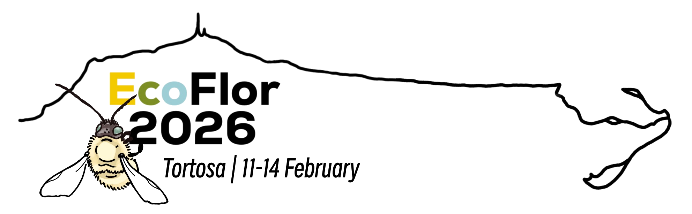
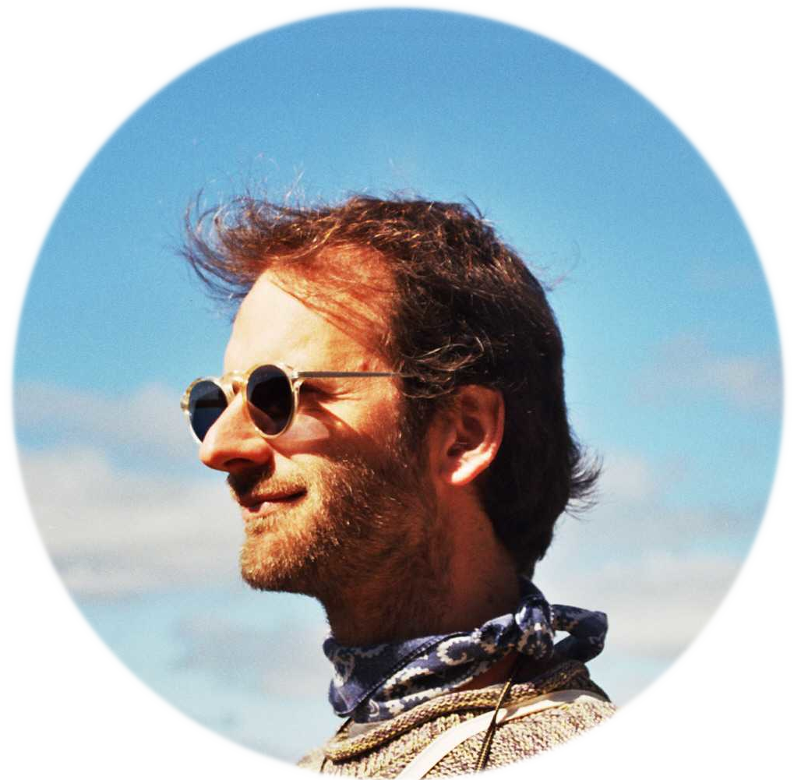
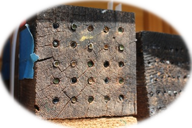
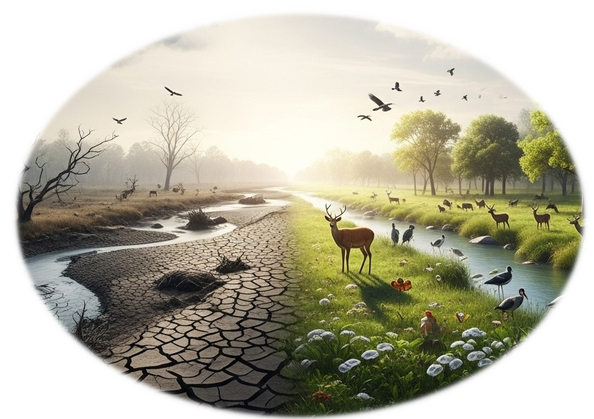
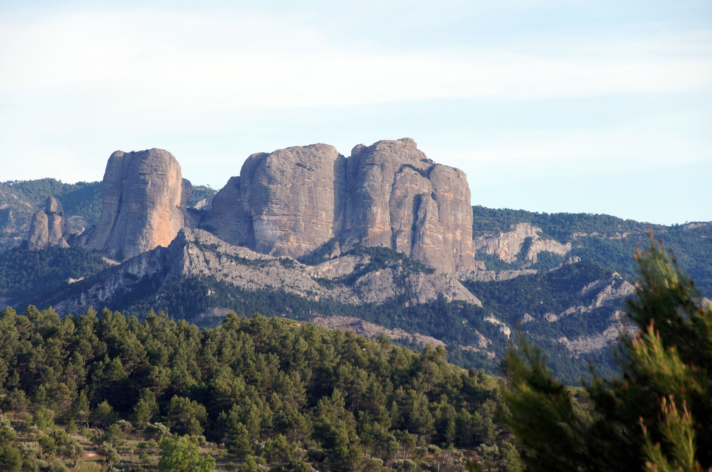
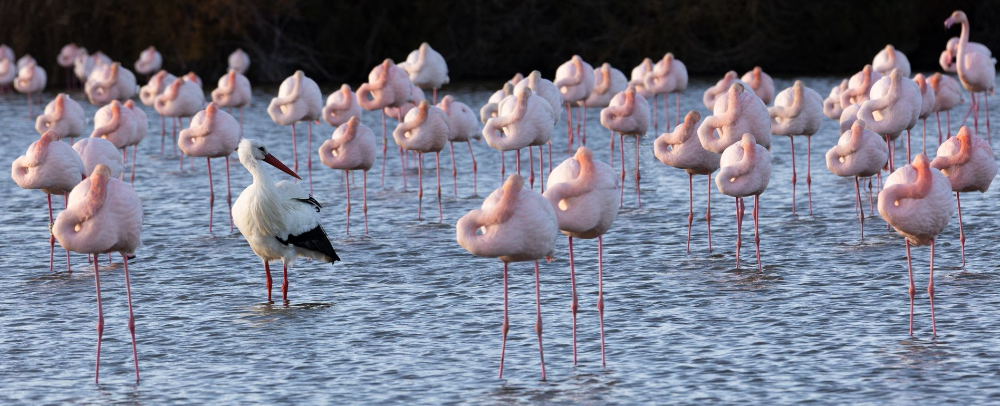
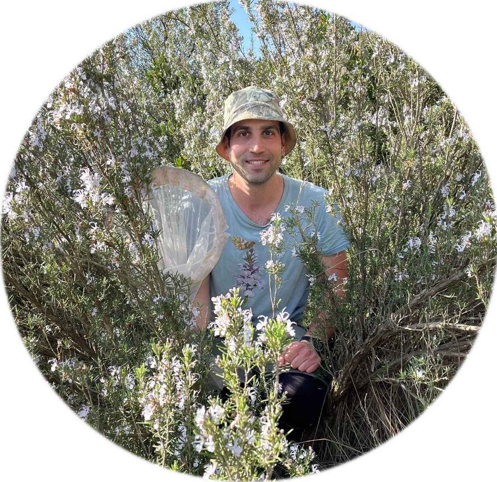
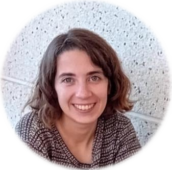

ECOFLOR 2026

About
Welcome to the 23rd Annual Meeting of the Spanish Group for Floral Ecology and Evolution (ECOFLOR)!
We’re pleased to announce the 23rd Annual Meeting of the Floral Ecology and Evolution working group, EcoFlor, which will take place from February 11-14, 2026, in Tortosa.
EcoFlor is a working group of the Spanish Association of Terrestrial Ecology (AEET). It organizes an annual congress to discuss recent scientific findings. The 2026 meeting will be held at the Centre Cívic Ferreries, located in the city center of the medieval city of Tortosa, on the banks of the Ebro River.
The EcoFlor annual meeting brings together scientists interested in floral ecology and evolution. Its goal is to promote discussion, networking, and creativity in science, involving students at all career stages in an open and friendly environment. Participants are invited to present their ongoing projects and engage in critical scientific discussion and networking. In recent years, EcoFlor has expanded its reach, achieving an international dimension and welcoming contributions from researchers worldwide.
Following the traditional format, the meeting will feature two days of presentations (Thursday and Friday, 11-12th February), including plenary talks, as well as oral and poster contributions. These will be thematically structured based on the submitted abstracts.
In addition, there will be workshops on Wednesday 11th February and a field trip on Saturday to the Ports Natural Parks (a mountain range affected by a recent wildfire) and the Delta (an area of aquatic ecosystems and ecosystem restoration). The congress dinner will be held on Thursday 12th February evening.
All contributions should be in English to promote discussion and interaction with our international audience.
Meeting information summary
üìÖ 11-14th February 2026
üìç Tortosa
üíÜ‚Äç‚ôÄÔ∏è 2 Workshops on 11th February
üßó Field trip on 14th February
üçΩ Conference dinner on 12th February, ~40‚Ǩ per person
✉️ Registration until November 30th, 2025, currently closed.
üìû Contact via WhatsApp group chat, Discord or email
Registration
Registration is closed!
Registration and Contributions
Attendance at the meeting is free, but registration is mandatory for logistical reasons. Please fill out the form if you plan to attend.
When registering, you can also submit a proposal for an oral or poster presentation. Awards will be given for the best oral and best poster presentations.
Senior researchers are also welcome to propose opening talks. These talks will be slightly longer than oral presentations and will consist of short lectures on research lines, breakthrough ideas, or emerging topics of scientific interest, rather than the results of specific studies.
We also welcome proposals for workshops to be held on Wednesday the 11th (the day of arrival). We especially encourage workshops that help early-career researchers develop skills, such as fieldwork methods, sample processing, laboratory protocols, data analysis, and scientific writing. Discussions on emerging topics of interest and networking opportunities are also welcome!
At the end of the form, there is a questionnaire to find out if you’d be interested in participating in the parallel activities. Once we know the potential attendance, we’ll provide more information to participants.
Important Note
The meeting is limited to 100 participants. Acceptance will be based on a combination of factors: the order of registration, whether you submit a contribution, and the scientific scope of your work. We highly encourage young researchers to submit their contributions, as the scientific commission will give them priority for acceptance.
Preparing Your Abstract
Please submit your abstract in English during the registration process. The abstract should not exceed 200 words. When submitting, please also provide five keywords that will help us organize the conference sessions.
Each main author may submit only one contribution. We kindly request that the main author be the one who submits the abstract.
Oral Presentations
Oral presentations will be 12 minutes long, and all slides must be in English.
If your presentation is accepted, please email your slides to ecoflor2026@gmail.com by February 2nd. The organizing committee will use your file solely for projection during the conference and will delete it immediately afterward.
Poster Presentations
Posters will be displayed in a room next to the main hall throughout the conference.
Poster sessions will take place during the coffee breaks: a 30-minute session in the morning and a one-hour session in the afternoon. The afternoon break, which will include coffee and beer, is specifically designed to encourage discussion and networking with poster presenters.
Workshops
Workshops will occur in the venue, Centre Cívic Ferreries. One workshop will focus on Nesting traps for cavity-nesting bees and wasps in ecological studies: biology, ecology, materials and methods and second one on Perspectives in plant-pollinator systems research in the new era of Nature Restoration. To participate in the workshops, you must be registered. Further information about place and attendance will be sent to all registered participants. For more information, see the Workshops.
Programme
Wednesday 11th February
Thursday 12th February
- 8:00 - 8:30 Registration
- 8:30 - 9:00 Opening ceremony
- 9:00 - 10:00 Oral presentations
- 10:00 - 10:30 - Coffee break + Poster session
- 10:30 - 12:00 Oral presentations
- 12:00 - 13:00 Plenary talk
- 13:00 - 15:00 Lunch
- 15:00 - 16:30 Oral presentations
- 16:30 - 18:00 Oral presentations
- 18:00 - 19:00 Coffee goodbye + Poster session
- 21:00 Conference dinner
Friday 13th February
- 9:00 - 10:00 Oral presentations
- 10:00 - 10:30 - Coffee break + Poster session
- 10:30 - 12:00 Oral presentations
- 12:00 - 13:00 Plenary talk
- 13:00 - 15:00 Lunch
- 15:00 - 16:30 Oral presentations
- 16:30 - 18:00 Oral presentations
- 18-19 Coffee goodbye + Poster session
- 19:00 - 19:30 Closing ceremony
Saturday 14th February
Field trip 8-18h
Keynote speakers

Prof. Juli Pausas, “Fire and plant reproduction”
Juli G. Pausas is a CSIC Research Professor at Centro de Investigación sobre Desertificación (CIDE, Valencia, Spain) of the Spanish National Research Council (CSIC). His research focuses on ecology and evolution of mediterranean and fire-prone ecosystems, and specifically on understanding the role of fire in shaping populations, species (i.e., fire traits), communities (i.e., assembly processes), landscapes, and biomes. While his primary experience is in Mediterranean ecosystems, he possesses a broad, global perspective on ecology. He has participated in several successful international research projects and has experience in both field and modelling studies. He has written more than 200 scientific papers, co-edited an international book on theecology of Cork oak woodlands (Island Press), co-authored a book on Fire ecology in Mediterranean ecosystems (Cambridge Press), and book in Spanish on fire ecology.

Dr. Cristina Botías, “Flowers as Hotspots of Pesticide and Pathogen Exposure for Bees”
Cristina Botías is a Ramón y Cajal Research Fellow at the University of Alcalá. She holds a PhD in Veterinary Science from the Complutense University of Madrid, completed at the Apicultural and Agri-environmental Research Center (CIAPA–IRIAF), where she studied the effects of honeybee pathogens at both individual and colony levels. Her doctoral work, awarded the PhD Extraordinary Prize, provided key insights into how emerging diseases affect bee health and colony performance. Following her PhD, Cristina conducted postdoctoral research at the University of Sussex (UK), investigating pesticide exposure and its interactions with other stressors, such as pathogens. Her findings highlighted that bees are exposed to higher and more prolonged pesticide levels than previously thought. She later held a Juan de la Cierva Fellowship at theEstación Biológica de Doñana–CSIC, focusing on disease pressures in wild bees, and subsequently returned to CIAPA–IRIAF with an INIA-DOC fellowship to continue her research on wild pollinator health. Since 2022, she has been based at the University of Alcalá, where her research focuses on the pathogenesis and epidemiology of pathogens affecting bumblebees and other pollinators. She also teaches undergraduate courses in Zoology and Sanitary Entomology within the degrees of Environmental Sciences, Biology, and Sanitary Biology. Cristina has published over 50 scientific articles and led several research projects funded by regional, national and international bodies. She is also active in outreach efforts, promoting awareness of pollinators’ ecological importance and the threats they face.
Workshops
Two workshops will be held on Wednesday 11th February. Please indicate your interest in attending one of them in the registration form.

Nesting traps for cavity-nesting bees and wasps in ecological studies: biology, ecology, materials and methods
Nesting traps simulate nesting resources for a wide diversity of bees and wasps. They are useful to standardize sampling and sample a lot of sites simultaneously. However, nesting traps can be designed in multiple ways, and their use and effectiveness is dependent on the scientific questions addressed as well as in the knowledge of the natural history of bees and wasps. In this workshop we will provide basic knowledge on the biology and ecology of cavity-nesting bees and wasps, and we will provide specific recommendations on which materials to use and how to install them to assure replicability and effectiveness of sampling.
Instructors: Júlia Batlle-Benaiges, Júlia Coromina, Carlos Hernández-Castellano
Time: Wednesday 11th February, 10:00 - 13:00

Perspectives in plant-pollinator systems research in the new era of Nature Restoration
Plant-pollinator systems are essential to sustain biodiversity and function in ecosystems. Indeed, main research topics in the ECOFLOR community include, among others, the study of the evolution of breeding systems, pollination ecology, spatio-temporal variation in pollinator communities, and ecological networks. In a context of global change, the scientific community is adapting continuously to research and management challenges imposed by the need to reverse negative impacts and restore the integrity of ecosystems. In Europe, this framework is exemplified by the Nature Restoration Law. In this workshop, we want to organize a discussion around the framework of the Nature Restoration Law, to detect priorities, challenges, and opportunities for research in plant-pollinator systems. This will be conducted within the ECOFLOR community and will yield a multi-authored, collaborative paper, published in a scientific journal related to the research topic.
The organizers will provide preliminary information and suggestions, but the aim is that all those with interest and experience can join and lead the workshop team.
Time: Wednesday 11th February, 15:00 - 18:00
Field trip
The field trip will take place on Saturday 14th February, visiting the Ports Natural Parks (a mountain range affected by a recent wildfire) and the Delta (an area of aquatic ecosystems and ecosystem restoration). More details will be provided to registered participants.

Ports Natural Park
The Ports Natural Park is a sub-Mediterranean ecosystem predominantly mountainous and dominated by forests. It is located in the southernmost part of Catalonia (NE Spain), being part of the Iberian System mountain range and formed of calcareous mesozoic materials.
In July 2025, a wildfire originated in Paüls (a municipality close to the Ebro river) affected more than 3000 hectares of mainly Pinus halepensis forest.
In the first part of the visit, we will learn about 1) the ecosystems and conservation strategies present in the Ports Natural Park; 2) how the wildfire started, developed, and its consequences in the affected area; and 3) the current status of forests and fire regimes in this region. We will also discuss several topics of ecological relevance for plant-pollinator systems in areas affected by wildfires, including ongoing projects and studies.

Delta Natural Park
The Ebro Delta Natural Park is one of the most important and biodiverse wetlands in the Western Mediterranean, covering around 320 km2 of rice fields, lagoons, salt marshes and sand dune systems. The Ebro Delta hosts a highly diverse community of waterbirds, including important populations of some iconic species such as the Audouin gull. During the second part of the visit, we will have lunch in the “Casa de Fusta” restaurant, where we will taste several local dishes (cost ~30€). Then we will visit the “Finca Bombita”, a former 500-ha rice farm that is being rewilded to promote biodiversity and face climate change impacts on the territory. Together with the environmental managers, we will have the opportunity to discuss: (i) the effects of climate change on sensitive environments such as the Ebro Delta, (ii) potential strategies and NbS to reduce these impacts, and (iii) the socio-environmental challenges involved in carrying out this type of restoration projects.
Departure will be at 8:00 and arrival at ~18:00, with the possibility to come back to Barcelona.
Venue
Welcome to TORTOSA!
The 23rd edition of EcoFlor takes place at the Centre Cívic Ferreries. This historical building (ancient market) is located in the city center of Tortosa.
Oral Presentations (including plenary talks) will take place in the Main Hall.
Posters will be in the room next to the Main Hall.
Workshops will be conducted in Centre Cívic Ferreries.
There are up to three spaces (two small meeting rooms, one big hall with panoramic view to the Main Hall) upstairs. Consider this if you need to work some time or to meet with colleagues. You could book the room some period of time by 1) mailing to the organization, or 2) writing it in the room schedule (blank paper in the door).
How to get there
For those coming from abroad and landing at Barcelona airport, it is easy to reach Tortosa, since there is a direct bus (Hife company) connection with departures every hour, taking about 2 hours to reach Tortosa. Remember to buy the ticket with anticipation. Consider that you can also get the bus (Hife) from several bus stops in Barcelona, with direct connections to Tortosa. From the Tortosa bus station, it is approximately fifteen minutes walk to the venue.
If you are already in Barcelona, you may get the train R16 from Sants Train Station operated by the Renfe company. Departures are approximately every 1-2 hours, taking about 2 hours. From the Tortosa main train station, it is approximately ten minutes walk to the venue.
For those coming in car (e.g. Spain), just get the exit number 40 in the AP7 railway.
If you find any problem, contact the ECOFLOR organization committee.
Where to stay
Hotel Corona is close to the venue and kindly offer the attendees a 10% discount after reservation in their website indicating the code ECOFLOR26
Parador de Tortosa is an ancient building within the medieval castle. It is a majestic place, probably a bit far away from the venue (so assure you will be able to move properly), but if you want to feel the real Tortosa experience, go there. They kindly offer to us a 15% discount if booking is made early.
More hotels, hostels, flats, and so on can be found at www.tortosaturisme.cat
Consider that Tortosa is a small city, so do not wait unti the last minute to book accommodation! If you find any problem, contact the ECOFLOR organization.
Where to have lunch
Close to the venue there are a lot of bars (e.g. Bar Ñoño) and restaurants (never a limiting factor in Spain!)
However, for those who want (no need for reservation) the Restaurant lo Llaüt (traditional southern catalan cuisine) will offer to us a genuine and affordable menu (based on traditional and authentic paella) on thursday and friday. Very (very) recommendable.
Another fantastic option is to have lunch in Mercat de Tortosa, a genuine Mediterranean market where fresh fruit, vegetables, fish and meat, mingle with quick and delicious cooking in bar stands (Market cuisine).
If you go there, you simply HAVE TO go to Bar Ester. They are simply the best. Try the traditional “abadejo” (cod), cap-i-pota, artichoke omelette, and so on (everything local).
Where to have dinner and beers
Once the congress sessions end in the afternoon (~19h) we will cross the bridge over the Ebro river, admire the Cathedral in front of us, and face two streets where plenty of bars and restaurants will help us continue networking:
Anything there and between these streets will be fine.
Remember to join the Whatsapp group ECOFLOR Dark-Side for further information (floral ecology and evolution continue at night!).
The Conference Dinner will take place on Thursday 12th February, at a restaurant specialized in traditional and local food. Price will be ~40€ per person.
What to visit
if you are planning to come to Tortosa earlier or to stay a couple of days more after the congress, you may find useful this webpage: https://www.tortosaturisme.cat/en/ Here you can find several options to enjoy the city, but also the surroundings. Tortosa is an small, ancient city in southern Catalonia, crossed by a river, and between two natural areas (mountains and sea). There is plenty of history, culture, gastronomy (and very good white wines), and an extraordinary natural environment. We will try our best to make you feel everything of these.
Organisation committee
The 23rd edition of EcoFlor meeting is organised by the Wildlife Pollinators Group, a research group of the Wildlife Ecology and Health Lab, based in the Veterinary Faculty of the Autonomous University of Barcelona (UAB). Additional researchers from different institutions (IRTA, CTFC, IVIA, CREAF) are actively involved in the organisation.
In the Wildlife Pollinators Group we study the relationship between large herbivores (domestic and wild) and plant-pollinator communities and interactions,as well as in pollination function. We are also interested in understanding how other processes operating at large scales (such as wildfires) influence the assemblage of these communities. On the opposite (microscopic scale) side, we are interested in disentangling the mysteries behind solitary bee health. We conduct basic faunistic studies as well as research on bee diversity patterns in multiple types of habitats (including urban ecosystems, riparian ecosystems, and grasslands).
Organisation committee: Carlos Hernández-Castellano, Néstor Pérez-Méndez, Jordi Margalef-Marrassé, Alice Casiraghi, Jakub Štenc, Júlia Batlle-Benaiges, Júlia Coromina, Nil Guerrero, Marina Aguilar Grau,

Carlos Hernández-Castellano
Postdoctoral researcher at the Autonomous University of Barcelona (Department of Medicine, Veterinary Faculty), currently based at the Czech University of Life Sciences (Prague, Czech Republic). He is an ecologist with expertise in plant-pollinator interactions and with interest in multiple topics of bee ecology, ranging from the consequences of large-scale disturbances (herbivory and wildfires) to the study of bee health. He is also interested in the diversity patterns of bees in multiple ecosystem types, including urban environments.
Néstor Pérez-Méndez
Ramon y Cajal Researcher at the Institut de Recerca i Tecnologia Agroalimentàries (IRTA). I am an ecologist broadly interested in (i) assessing how global change drivers affect the functioning of natural and agricultural systems, and (ii) identifying and evaluating agricultural management strategies that reconcile crop production with biodiversity conservation.
Instagram account for wildlife photography: @raw_natura

Alice Casiraghi
PhD candidate at the Valencian Institute of Agricultural Research (IVIA), specializing in community ecology. Her doctoral research focuses on arthropod trophic webs (including pollinator-plant relationships) associated with different cover crop treatments in citrus agroecosystems. In addition to her thesis work, she has gained experience as a specialist in aphid–parasitoid interactions in wheat fields and is actively involved in aphid taxonomy studies during her free time.

Jordi Margalef-Marrassé
PhD in terrestrial ecology from the Autonomous University of Barcelona (UAB) and CREAF. Postdoctoral researcher at Forest Sciences Centre of Catalonia. He is a vegetation ecologist whose research focuses on climate change-induced dynamics and plant-plant interactions. More recently, his work has also focused on exploring forest management scenarios aimed to increase community resilience in the face of wildfires.

Jakub Štenc
Postdoctoral researcher at the Charles University (Departments of Botany and Zoology, Prague, Czech Republic), currently based at the CREAF research center in Barcelona. He is an ecologist with expertise in plant-pollinator interactions and with interest in multiple topics related to pollen transfer, ranging from the dynamics of pollen presentation, transfer and deposition, consequences of pollinator behaviour (preferences and constancy) to the pollination networks. He is also interested in automatization of the image analysis.

Júlia Batlle-Benaiges
M.Sc. Wildlife and Biodiversity student at the University of Freiburg. She is interested in bee ecology and in the resilience of plant-pollinator networks to disturbances such as herbivory. For her Bachelor’s thesis, she investigated the effects of pasture size and grazing intensity on bee diversity patterns. She has also gained experience using nesting traps to study cavity-nesting bees and wasps.

Júlia Coromina
MSc student in Terrestrial Ecology and Biodiversity Management at the Universitat Autònoma de Barcelona. Since 2022, she has been studying native bees and conducting experiments in pastures with large domestic herbivores. She has also studied bee species that nest in pre-existing cavities, built entomological collections, and identified bee and other pollinators. She is currently developing her Master’s thesis on the resilience of plant–pollinator networks under different browsing levels by large wild herbivores.

Nil Guerrero
MSc student in Terrestrial Ecology and Biodiversity Management at the Universitat Autònoma de Barcelona. He holds a double degree in Geology and Environmental Sciences. In 2024, he began studying plant–pollinator interactions, conducting his undergraduate thesis on pollinator communities in riparian ecosystems. In addition, he has collaborated in sampling campaigns in areas affected by wildfires. He has developed strong skills in identifying bees and other pollinators both in the field and in the laboratory, as well as in preparing entomological collections. He is currently working on publications documenting new bee records in the Iberian Peninsula and preparing a review article on the role of pollinators in riparian habitats as part of his MSc.

Marina Aguilar Grau
MSc student in Ecology, Management and Restoration of the Natural Environment at the University of Barcelona. She holds a BSc in Biology. In 2024, she began researching the ecology of bee populations in urban environments, with an emphasis on species diversity and taxonomic resolution. She has experience in the use and application of taxonomic keys for various groups of pollinators, in preparing entomological collections, and is skilled in data analysis and processing using R. As part of her MSc research, she is compiling a checklist of bee species from her study system and preparing a manuscript addressing differences in species composition and community turnover between urban and natural habitats.
Acknowledgements
We thank the following organisations for support and funding:

AEET - Asociación Española de Ecología Terrestre

Parc Natural dels Ports

Parc Natural del Delta de l’Ebree

Ajuntament de Tortosa